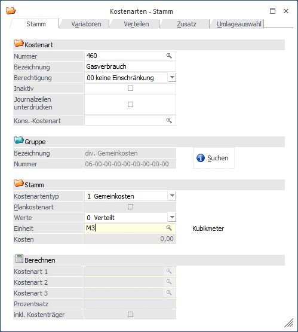
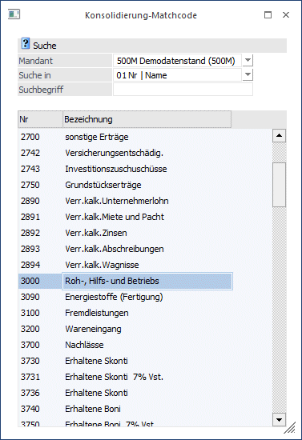
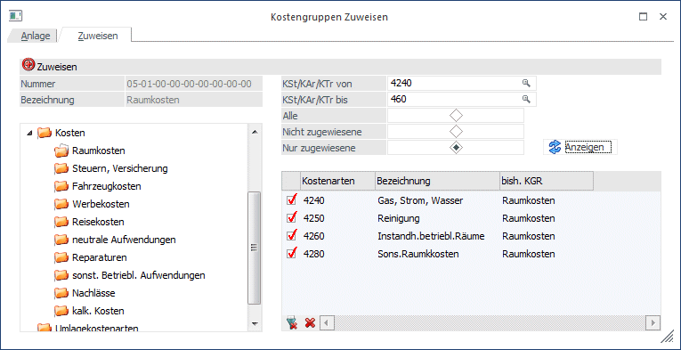
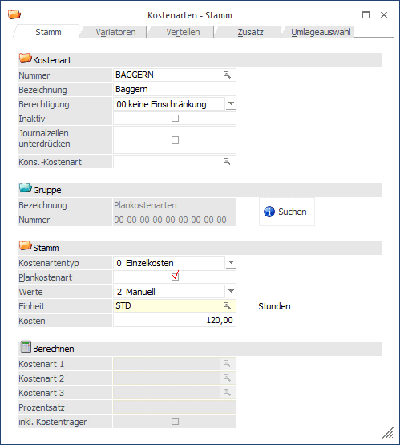

Kostenarten können nach verschiedenen Kriterien gegliedert werden, z.B. nach der Entstehung, nach Abhängigkeit von der Beschäftigung, etc.
Im Kostenartenstamm erfolgt die Festlegung der Art der Kosten.
Achtung
Wenn eine Kostenart einmal als z. B. Einzelkosten gekennzeichnet wurde, darf der Typ nicht mehr abgeändert werden, da sonst wichtige Informationen der bereits erfassten Journalzeilen verloren gehen könnten.
Der Kostenartenstamm wird über den Menüpunkt
1 Stammdaten
1 Kostenarten
oder Schnellaufruf
1 STRG + 2
aufgerufen.

Buttons

Ø OK
Durch Drücken der OK-Taste (F5) wird die neue Kostenstelle gespeichert.
Ø Ende
Mit Ende verlassen Sie den Bildschirm, ohne die Eingaben zu speichern (wenn Sie zuvor nicht OK gedrückt haben).
Ø Vergessen
Mit Vergessen löschen Sie Ihre aktuelle Eingabe, das Fenster bleibt jedoch für eine Neueingabe geöffnet.
Ø Löschen
Sie löschen eine bereits existierende Kostenart.
Ø Navigationsleiste (VCR)
Über die sogenannte VCR-Buttonleiste kann durch Mausklick zwischen den einzelnen Kostenstellen, bzw. Abteilungen geblättert werden:
ü  Damit kann der erste Datensatz angesprochen
werden.
Damit kann der erste Datensatz angesprochen
werden.
ü  Damit kann der vorherige Datensatz
angesprochen werden.
Damit kann der vorherige Datensatz
angesprochen werden.
ü  Damit kann der nächste Datensatz angesprochen
werden.
Damit kann der nächste Datensatz angesprochen
werden.
ü  Damit kann der letzte Datensatz angesprochen
werden.
Damit kann der letzte Datensatz angesprochen
werden.
ü  Damit wird die nächste freie Nummer für die
Neuanlage gesucht.
Damit wird die nächste freie Nummer für die
Neuanlage gesucht.
Fensterbutton
Ø 
Mit dem Suchen-Button oder Alt + S gelangen Sie in den Kostengruppenmatch, um bereits angelegte Kostengruppen übernehmen zu können.
Ø Kostenart
Eingabe der Kostenartennummer, max. 20stellig, alphanumerisch;
Ø Bezeichnung
Die Kostenartenbezeichnung kann max. 35stellig, alphanumerisch sein. Mit dieser Bezeichnung ist die Kostenartenjournalzeile auf der Kostenstelle ausgewiesen.
Wird eine Kostenart neu angelegt, dann wird im Feld "Bezeichnung" der Text
Ø NEUEINGABE - F9 für Übernahme
angezeigt. In dem Fall kann durch Drücken der F9-Taste nach allen bereits vorhandenen Kostenarten gesucht werden. Die Daten der ausgewählten Kostenart werden dann in die neue Kostenart übernommen. In den KORE-Parametern (siehe auch WinLine START, Parameter/Applikations-Parameter) kann eingestellt werden, ob bei der Übernahme die Zusatzfelder berücksichtigt werden sollen oder nicht.
Ø Berechtigung
Hier kann eine Berechtigung vergeben werden, die das Editieren im Stamm und die Verwendung dieser Stammdaten in den KORE-Erfassungsprogrammen steuert.
Hinweis 1
Benutzern des Typs "Administrator" oder mit der Administratorenberechtigung "Benutzeradministrator" steht in der Auswahlbox der Punkt ">> Neues Profil" zur Verfügung. Über die Anwahl dieses Eintrags kann in der Folge ein neues Berechtigungsprofil angelegt werden.
Ø Inaktiv
Wenn ein Datensatz auf Inaktiv gesetzt wird, hat das vorerst nur die Auswirkung, dass er nicht mehr im Matchcode angezeigt wird. Inaktive Kostenstellen, -arten, und -träger können nicht bebucht werden.
Ø Kons. - Kostenart
Dieses Feld dient zum Zuweisen einer Kostenart zwischen Haupt und Submandanten und wird über die Zuweisung verändert. Damit wird die Kostenart bei einer Änderung im Hauptmandanten im Submandanten automatisch abgeglichen/aktualisiert (wenn die Daten mit einer entsprechenden Vorlage verändert werden).
Wenn eine Änderung im Submandanten durchgeführt wird, wird der Hauptmandant auch aktualisiert, wenn die Kostenart dort nicht im Feld "Kons.-Kostenart" eingetragen ist und die Konsolidierungskostenart leer ist. Außerdem wird im selben Mandanten nach der gleichen Konsolidierungskostenart gesucht und die Stammdaten werden entsprechend aktualisiert.
Wenn der Matchcode aufgerufen wird, öffnet sich folgendes Fenster:

Hier kann nun eingestellt werden, wonach in anderen Mandanten gesucht werden soll.
Hinweis 2
Wurde ein Haupt- und ein Submandant definiert, öffnet sich dasselbe Fenster, wie bei der Zuweisung im WinLine START.

Bei dieser Zuweisung wählt man die Kostenart des Hauptmandanten und sucht in allen Mandanten nach der Nummer oder dem Namen (Bezeichnung) des passenden Kontos. Über das Flag kann jetzt eine Konsolidierung der Kostenart 460 aus dem Mandant 300M mit der Kostenart 4240 aus dem Mandant 500M konsolidiert werden.
Ø Journalzeilen unterdrücken
Ist diese Checkbox aktiviert, werden die mit dieser Kostenart gebuchten Journalzeilen auf allen Ausgaben unterdrückt, wo Einzelzeilen angezeigt werden können (z.B. KORE-Statistik). Beispiel: Umlagezeilen sollen auf der Auswertung nicht im Detail aufscheinen.
Ø Gruppe
Im Bereich Gruppe ordnen Sie die Kostenart einer Kostenartengruppe zu, die im Vorfeld im Menüpunkt Stammdaten - Kostenartengruppen angelegt wurde.
Button
Ø 
Es werden alle Kostenarten in dem oben vordefinierten Bereich, die selektiert werden können, angezeigt.
Ø Kostenartentyp
Der Kostenartentyp steuert die Darstellung der Kosten (Aufwände) und Leistung (Erlöse) in der KORE. Ein nachträgliches Editieren des Kostenartentyps (z.B. Änderung von Einzelkosten auf Erlös) wäre nicht sinnvoll! Hier ist auch zu beachten, dass die Beträge in der KORE grundsätzlich IMMER positives Vorzeichen haben - außer bei Stornos oder Kontendrehern in der FIBU (z.B. wenn ein Aufwandskonto mit einer Aufwands-Kostenart im HABEN mit positivem Betrag gebucht wird, ergäbe sich dadurch ein negativer Kostenbetrag im KORE-Journal.
ü Einzelkosten
Einzelkostenart
ist zu aktivieren, wenn Kosten (Aufwände) direkt zurechenbar sind. Im Zuge der
Kostenerfassung können mit Einzelkostenarten auch Kostenträger erfasst werden.
Einzelkosten sind immer zu 100% variabel (Variator ist automatisch = 10).
ü Gemeinkosten
Gemeinkostenart
ist zu aktivieren, wenn Kosten (Aufwände) nicht direkt zugerechnet werden
können. Im Zuge der Kostenerfassung können Sie bei einer Gemeinkostenart KEINE
Kostenträger ansprechen. Gemeinkosten können einen variablen und fixen
Kostenanteil aufweisen. Um die Erfassung zu automatisieren gibt es die
Möglichkeit Variatoren (im Reiterfenster "Variator") abzuspeichern. Je nachdem,
in welcher Kostenstellengruppe die Kosten später anfallen kann ein eigener
Variator hinterlegt werden (z.B. können Stromkosten im "Sekretariat" einen
anderen Variator haben, als in der Produktionshalle, in der die Maschinen 24
Stunden durchlaufen).
ü Umlage
Der Typ "Umlage" ist für
sog. "Umlagekostenarten" zu aktivieren, die dann im Zuge der Erstellung der
Umlagebuchungen (Kostenstellenumlage) für die Umbuchung der Kosten zwischen den
Kostenstellen verwendet werden. Damit ist jede Umlagestufe nachvollziehbar, da
durch die Umlage "Minus-Buchungen" auf der zu entlastenden Kostenstelle, und
"Plus-Buchungen" auf den empfangenden Kostenstellen erzeugt werden. Aufgrund der
Umlagekostenart werden die umgelegten Kosten auf den Kostenstellenblättern bzw.
im BAB in einer eigenen Kostenzeile und -summe dargestellt. Mit diesem
Kostenartentyp werden KOSTEN umgelegt (im Gegensatz zum Typ "Erlös-Umlage -
siehe unten).
ü Erlös
Erlöskostenart ist für
die Leistungserfassung (Erlöse) zu aktivieren. Im Zuge der Kostenerfassung
können Sie auch Kostenträger ansprechen. Hinweis: Die Beträge werden im
Normalfall immer POSITIV erfasst, da anhand des Kostenartentyps erkannt wird, ob
es sich um Kosten oder Erlöse handelt (d.h. im Journal ist sowohl bei
Kostenbuchungen als auch bei Erlösbuchungen ein positiver Betrag gespeichert).
Ausnahme: bei Stornobuchungen oder Kontendrehern in der FIBU (also wenn z.B. ein
Erlöskonto im Soll angesprochen wird) wird der KORE-Betrag automatisch negativ
gebucht.
ü Erlös-Umlage
Dieser
Kostenartentyp wird für Umlagekostenarten verwendet, mit denen Erlöse umgelegt
werden sollen. In der Praxis bedeutet das, dass für die Umlage einer
Kostenstelle, die Kosten UND Erlöse aufweist, ZWEI Umlageverfahren und
Umlageplanschritte definiert werden müssen: einer für die Kostenumlage, einer
für die Erlös-Umlage (damit die Kostenartentypen korrekt berücksichtigt werden
können und auch auf den empfangenden Kostenstelle noch als "Kosten" oder "Erlös"
erkennbar sind).
ü Plankostenart
Durch Aktivierung
der Option "Plankostenart" können Sie Kostenarten als "Plankostenarten" in der
KORE verwenden. Plankostenarten sind automatisch Einzelkostenarten, da
üblicherweise Leistungen für Kostenträger damit "geplant" werden. Danach stehen
diese Plankostenarten bei den Kostenträgern (Register Budget) zur Budgetierung
von Planwerten zur Verfügung sowie auch in der Plankosten-Erfassung und in der
Umlage (für die Definition des Umlageverfahrens) zur Verfügung.
Ø Einheiten
Eingabe der für die Kostenart gültigen Einheit (z. B. Stunden, Kilometer). Die Einheiten werden im Menüpunkt
1 Stammdaten
1 Einheitenanlage
definiert.
Ist bei einer Kostenart eine "Einheit" hinterlegt, kann im Zuge der Erfassung auch die Anzahl der Einheit als Information eingegeben werden (z.B. die geleisteten Stunden, die gefahrenen Kilometer, etc.)
Ø Kosten
Ist eine Kostenart als Plankostenart angelegt, steht ihnen das Feld "Kosten" zur Werteingabe zur Verfügung. Der hier eingetragene Betrag (z.B. geplanter Stundensatz) ist die Basis für die Auswertung des Plankostenträgervergleichs (Plankosten/Sollkosten/Ist-Kosten). Die GEPLANTEN Stunden mal dem GEPLANTEN Stundensatz (der genau in diesem Feld hinterlegt wird) ergibt die PLANKOSTEN. Die im Menüpunkt "Plankosten - Erfassung" eingegebenen (oder über die ASCII-Import-Schnittstelle importierten) IST-Stunden mal dem geplanten Stundensatz ergibt die SOLLKOSTEN. Und sobald der tatsächliche Stundensatz im Zuge der Umlage errechnet wurde, ergeben die IST-Stunden mal dem IST-Stundensatz lt. Umlage die IST-Kosten in den Projekten (siehe auch Kapitel "Plankostenträgervergleich").
Beispiel einer Plankostenart
Im untenstehenden Beispiel wurde die Einheit STD = Stunden verwendet. Im Kostenfeld ist der geplante Stundensatz eingetragen. Dieser dient als Basis für die Plankostenrechnung bzw. auf Basis der tatsächlichen Beschäftigung (IST-Stunden) und des ursprünglich geplanten Stundensatzes werden die Sollkosten berechnet.

Ø Werte
Durch Anklicken der entsprechenden Optionen legen Sie fest, in welcher Form die Erfassung der Kostenart stattfinden soll.
Es gibt 4 Möglichkeiten:
ü Manuell
Die erfassten Kosten
können im Menüpunkt Kosten/Kosten-Erfassung und im Kostenaufteilungsfenster der
WinLine FIBU manuell den verschiedenen Kostenstellen und Kostenträgern (abhängig
vom Kostenartentyp) zugeordnet werden.
ü Verteilen
Wird die Option
"Verteilen" aktiviert kann im dafür vorgesehenen Register angegeben werden, in
welchem Verhältnis die Kosten im Zuge der Kostenerfassung auf welche
Kostenstellen automatisch aufgeteilt werden sollen. Das Register kann nur dann
geöffnet werden, wenn eine Kostenart als "verteilt" gekennzeichnet ist. (Es
besteht die Möglichkeit 3 Verhältniszahlen anzugeben, zurzeit wird nur die erste
Spalte - also Verhältnis 1 unterstützt). Die automatische Verteilung ist ein
Vorschlag, der bei der Kostenerfassung immer noch manuell übersteuert werden
kann.
ü Berechnen
Nach Bestätigen der
Option "Berechnen" können bis zu 3 verschiedene Basiskostenarten angegeben
werden, aus denen über einen frei bestimmbaren Prozentsatz die neue Kostenart
berechnet werden soll (z. B. Lohnnebenkosten sollen mit 95 % der Leistungslöhne
berechnet werden)
Beim Berechnen einer Kostenart kann auch optional der
Kostenträger mitberücksichtigt werden. Die berechnende Kostenart muss jedoch
eine Einzelkostenart sein.
ü Verteilungsschlüssel
Bei
Auswahl der Möglichkeit "Verteilungsschlüssel" wird die Registerkarte
"Verteilen" aktiv. Dort ist es möglich diverse Zeiträume festzulegen mit einem
"gültig ab" Datum. Für jeden Zeitraum kann eine Aufteilung von auswählbaren
Kostenstellen und der jeweiligen Verhältniszahl hinterlegt werden. Bei der
Kostenerfassung wird immer die Verteilung vorgeschlagen, wo das
Buchungserfassungsdatum in den "gültig ab" Zeitraum passt.
Buttons
Ø OK
Durch Drücken der OK-Taste (F5) wird die neue Kostenart gespeichert.
Ø Ende
Mit Ende verlassen Sie den Bildschirm, ohne die Eingaben zu speichern (wenn Sie zuvor nicht OK gedrückt haben).
Ø Vergessen
Durch Anklicken des Vergessen-Buttons werden alle Änderungen rückgängig gemacht und der Ursprungszustand der Kostenart wird wieder hergestellt.
Ø Löschen
Mit dem Löschen-Button kann eine bereits vorhandene Kostenart gelöscht werden.
Ø Navigationsleiste (VCR)
Über die sogenannte VCR-Buttonleiste kann durch Mausklick zwischen den einzelnen Kostenstellen, bzw. Abteilungen geblättert werden:
ü Damit kann der erste Datensatz angesprochen
werden.
ü Damit kann der vorherige Datensatz
angesprochen werden.
ü Damit kann der nächste Datensatz angesprochen
werden.
ü Damit kann der letzte Datensatz angesprochen
werden.
ü Damit wird die nächste freie Nummer für die
Neuanlage gesucht.
Fensterbutton
Ø
Mit dem Suchen-Button oder Alt + S gelangen Sie in den Kostengruppenmatch, um bereits angelegte Kostengruppen übernehmen zu können.